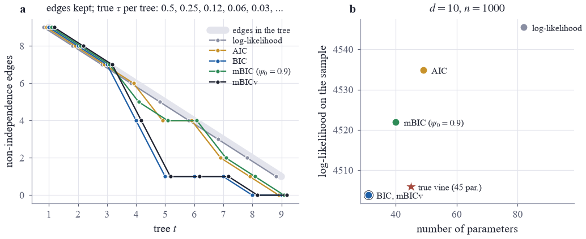
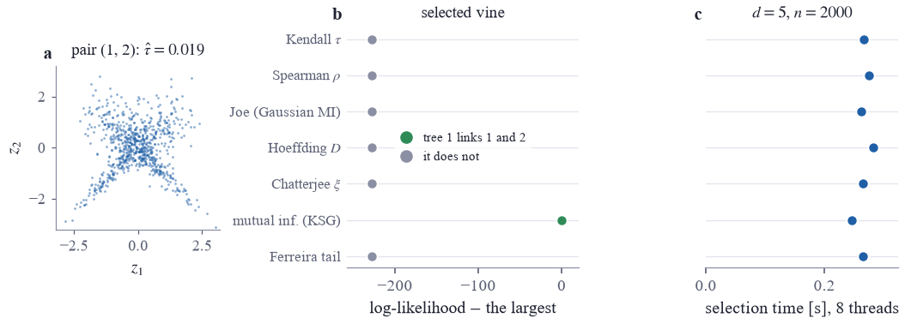
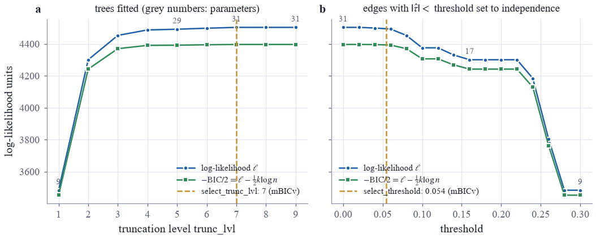

Controls (fv_controls)¶
fv_controls gathers every option of fitting and selection in one record. All fields have
defaults, are public and can be set independently:
The same record is accepted by fv_bicop%fit, fv_bicop%select, fv_vinecop%select and
fv_vinecop%relax; each routine reads the fields that concern it (see the last column).
Passing no record is the same as passing fv_controls(). The Python and R functions take
the options as keyword arguments with the same defaults; the names are listed on the
Python and R pages, and options without a binding
are noted in the tabs below.
Field reference¶
| field | type | default | meaning | used by |
|---|---|---|---|---|
family_set(FV_NFAM) |
integer |
[FV_ALL, FV_NONPAR, 0, ...] |
candidate family codes; only the first nfam entries are read |
select |
nfam |
integer |
23 | number of entries of family_set in use |
select |
selcrit |
integer |
FV_BIC |
selection criterion | select |
method |
integer |
FV_MLE |
FV_MLE or FV_ITAU (Kendall's tau inversion) |
fit, select |
tree_crit |
integer |
FV_TREE_TAU |
dependence measure that weights the spanning trees | vine select |
tree_algo |
integer |
FV_PRIM |
spanning-tree algorithm, FV_PRIM or FV_KRUSKAL |
vine select |
tau_mode |
integer |
FV_TAU_EXACT |
how Kendall's tau is computed for starts and preselection | fit, select |
trunc_lvl |
integer |
\(-1\) | last tree to fit; \(-1\) means \(d-1\) | vine select |
nthreads |
integer |
0 | OpenMP threads; 0 means FORTVINE_THREADS or half the logical CPUs |
all |
preselect |
logical |
.true. |
drop candidates whose tails contradict the data before fitting | select |
allow_rotations |
logical |
.true. |
try 90/180/270-degree rotations | select |
fast_mle |
logical |
.false. |
one-parameter families by tau inversion only | fit, select |
threshold |
real(dp) |
0 | edges whose tree criterion is below it become independence | vine select |
psi0 |
real(dp) |
0.9 | prior probability of a dependent edge for mBIC / mBICv | select |
select_trunc |
logical |
.false. |
choose the truncation level by mBICv | vine select |
select_threshold |
logical |
.false. |
choose threshold by mBICv |
vine select |
Families: family_set and nfam¶
family_set has room for FV_NFAM = 192 codes. By default it holds FV_ALL (codes 0 to 23,
every hand-coded parametric family) followed by FV_NONPAR (24 TLL, 25 Bernstein), and
nfam = 23 uses the first 23 entries: codes 0 to 22, every parametric family except
t-EV, whose fit is the slowest. The two most common changes need only nfam:
Any other set is written explicitly:
Adding the generic families:
Leave out FV_INDEP (0) if an edge must never be independence. The independence copula costs
nothing to "fit" and is the natural fallback for weak dependence, so keeping it is
recommended.
selcrit¶
| constant | value | criterion |
|---|---|---|
FV_LOGLIK |
0 | log-likelihood (no penalty) |
FV_AIC |
1 | Akaike |
FV_BIC |
2 | Bayesian (Schwarz) |
FV_MBIC |
3 | modified BIC with prior psi0 on dependence |
FV_MBICV |
4 | mBIC with prior psi0**t in tree t (vines); for a single pair as FV_MBIC |
The formulas are in Fitting. For nonparametric families the penalties use the effective degrees of freedom.

method and fast_mle¶
FV_MLE (0) maximises the likelihood. FV_ITAU (1) sets parameters from Kendall's tau and is
restricted to families 0 to 6 in selection. fast_mle = .true. with FV_MLE uses tau
inversion for the one-parameter families Gaussian, Clayton, Gumbel, Frank and Joe only. See
Kendall's tau inversion.
tree_crit¶
The tree criterion is the edge weight of the maximum spanning trees in vine selection. Each is returned in absolute value; with 10 or fewer observations every criterion is 0.
| constant | value | measure | weighted |
|---|---|---|---|
FV_TREE_TAU |
0 | Kendall's \(\tau_b\) | yes |
FV_TREE_RHO |
1 | Spearman's \(\rho\) (Pearson correlation of the ranks) | yes |
FV_TREE_JOE |
2 | \(-\tfrac12\log(1 - r^2)\), \(r\) the Pearson correlation of the normal scores (Gaussian mutual information) | yes |
FV_TREE_HOEFFD |
3 | Hoeffding's \(D\) on the empirical copula binned to \(\min(128, \max(32, \sqrt n))\) cells per axis | no |
FV_TREE_XI |
4 | Chatterjee's \(\xi\), symmetrised as the larger of the two directions (Chatterjee 2021) | no |
FV_TREE_MI |
5 | mutual information, Kraskov-Stögbauer-Grassberger estimator with \(k = 3\) (Kraskov et al. 2004) | no |
FV_TREE_FERREIRA |
6 | Ferreira's tail-dependence coefficient, largest of the four corners (Ferreira 2013) | no |
"Weighted" means that observation weights passed to select enter the criterion; the
unweighted measures ignore them. Kendall's tau is the default because it is invariant,
robust and matches the rank-based start values. The non-monotone measures (Hoeffding, \(\xi\),
mutual information) also detect dependence that is not concordance, at the cost of a
spanning tree that may place weak-\(\tau\) pairs early. The same measures are available directly
through fv_dependence.

tree_algo¶
FV_PRIM (0) and FV_KRUSKAL (1) both return a maximum spanning tree, so they give the same
tree unless several candidate edges have exactly equal weights; both break such ties
deterministically.
tau_mode¶
| constant | value | tau used for starts and preselection |
|---|---|---|
FV_TAU_AUTO |
0 | exact below 800 observations, normal-score approximation above |
FV_TAU_EXACT |
1 | exact \(\tau_b\), \(O(n \log n)\) |
FV_TAU_APPROX |
2 | \(\tfrac2\pi\arcsin(r)\) of the normal-score correlation \(r\) |
It does not affect the tree criterion FV_TREE_TAU, which is always exact.
trunc_lvl, select_trunc¶
trunc_lvl = k (with \(1 \le k \le d-1\)) fits only the first k trees; 0 fits none (an
independence copula). select_trunc = .true. stops earlier if a tree does not improve the
mBICv, see Truncation. The level reached is stored in vc%trunc.
threshold, select_threshold, psi0¶
threshold in \([0, 1]\) sets edges with a weak tree criterion to independence (sparse vines,
Nagler et al. 2019). select_threshold = .true. searches the threshold by mBICv, see
Thresholding. psi0 in \((0, 1)\) is the prior probability of a
non-independence edge in mBIC; a smaller value favours sparser models.

preselect, allow_rotations¶
preselect filters rotations by tail asymmetry before fitting, see
Preselection. Turning it off tries every
rotation compatible with the sign of \(\tau\) and slows selection down moderately.
allow_rotations = .false. uses only rotation 0. Rotatable families (Clayton, Gumbel, Joe,
the BB families, the extreme-value families, generic families) then model positive
dependence only, and are skipped entirely on pairs with \(\tau \le 0\); negatively dependent
pairs can then only be captured by the rotationless families (Gaussian, Student, Frank,
Plackett, FGM, AMH). See Rotations.
nthreads¶
nthreads > 0 uses that many OpenMP threads for the call. 0 defers to fv_threads():
the FORTVINE_THREADS environment variable if it is a positive integer, otherwise half the
logical CPUs reported by OpenMP. See Performance.
Recipes¶
Tip
A fv_controls value can be reset with ctl = fv_controls(), which restores every
default.